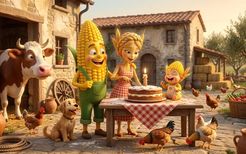
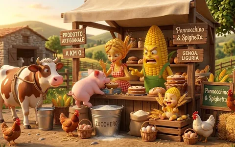
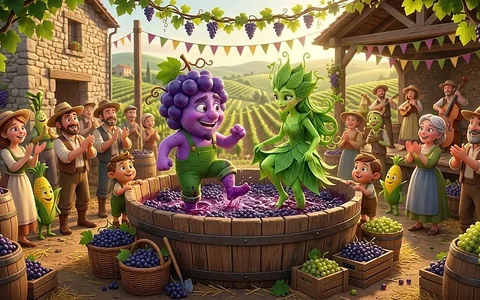

Coerenza dei Personaggi · Campagne ADV · Automazione Creativa
Creatività Automatizzata in Campagne ADV
Il DCO (Dynamic Creative Optimization) è una tecnologia pubblicitaria (sempre più automatizzata) che crea, personalizza e ottimizza gli annunci in tempo reale sfruttando varie informazioni: i dati dell'utente a cui è diretto il banner/messaggio, il contesto, le strategie del brand, della campagna, e altro. In breve, il DCO è una metodologia che sceglie, per ogni utente, la combinazione ottima di immagini, testo e offerte da proporre. Dalle quali, grazie a un meccanismo di feed-back, impara a riconoscere quelle che funzionano meglio.
L'infrastruttura attorno al DCO è appannaggio di piattaforme consolidate sul mercato da anni, rispetto a cui è impossibile competere. Criteo DCO+ (motore di retargeting per il media commerce), DV360/Studio di Google (la Demand-Side Platform di livello enterprise di Google Marketing, progettata per l'acquisto programmatico di spazi pubblicitari su display, video, audio, TV...), e altre piattaforme di dynamic creative basate su template (con layout fisso) come Flashtalking e Celtra. Per affrontare il problema dei margini di miglioramento di questi servizi, senza essere un'azienda già consolidata, occorre osservare le cose dal passo precedente rispetto al flusso operativo che conduce al DCO. Stiamo parlando dell'aspetto visivo-narrativo dei contenuti (immagini/testo): la capacità di automatizzare la generazione di varianti narrative sempre nuove e coerenti al claim, alle esigenze del brand e alle direttive della campagna, e mantenere una user attention viva e ingaggiata. Alcune delle piattaforme succitate, o delle componenti che le integrano, usano già l'AI generativa per produrre uno sfondo o una variante di un prodotto, ma spesso all'interno di un template fissato — lo dichiara la stessa Celtra a proposito del proprio strumento. Oppure si tratta ancora di generazioni single-shot, che mancano della capacità di mantenere un cast di personaggi e scenografie coerenti lungo tutto uno storyboard. Oppure incapaci di generare una scena multi-inquadratura consistente, al posto del tradizionale nuovo asset generato e incastrato in un template.1.
L'obiettivo esposto in questa sezione è quello di superare queste inefficienze nel creative content, diffuse specialmente a livello artigianale e di low-budget, rispetto alla qualità dei contenuti grafici, alla contiguità di una storia e alla capacità di autocorreggersi in un loop (con feedback), che il nuovo corso dell'AI già offre da qualche mese.

PANNOCCHINO E SPIGHETTA
PANNOCCHINO E SPIGHETTA
LA VENDEMMIA PANNOCCHINO E SPIGHETTAChiarito che il post non si occupa di performance di campagne ADV, ma di ottimizzazione della creazione di contenuti, in particolare storyboard, ne sono stati creati alcuni puramente di esempio, per mostrare non la loro originalità ed efficacia, ma solo per poter presentare l'engine che li costruisce e li delibera. Per cui i due post: Storyboard Automatico: Ecco Pannocchino e Spighetta che segue la coppia di mascotte nella loro festa di matrimonio, e il post gemello Pannocchino e Spighetta hanno un bambino, sono mostrati meramente come simulazione dei risultati di The Engine: generation, control, export. Semplicemente, i due post, insieme a quello sulla vendemmia (La vendemmia di Grappolotto e Foglina) sono il frutto di una creazione generativa che, a partire da una combo a tre assi: personaggi x claim x brand genera una coerenza iterata fino alla presentazione finale del prodotto. Vedremo, a titolo esemplificativo, come una storia composta da 5-6 beat, 2 slogan, 4-5 proporzioni, conduca a ottimizzare il time-to-market, riducendo l'effort ridondante di una composizione che oggi molte agenzie medio-piccole risolvono ancora a mano.2
I quattro layer del DCO: dove ci collochiamo
Nella tabella sottostante viene presentata una suddivisione del DCO in quattro layer, per circoscrivere meglio il nostro progetto. Ogni riga dichiara il compito principale di quel livello, e spiega se sia compatibile con un progetto indipendente, scollegabile dall'infrastruttura al contorno. La prima riga risponde a questi requisiti, dato che si tratta di un modulo circoscritto, il quale, aggiungendo un'interfaccia di I/O, è inscrivibile in un involucro DSP. Le successive, per motivi diversi ma riassumibili in diversi vincoli: integrazione, budget, comunicazioni articolate e precostituite, dati e quant'altro, ne rendono in pratica impossibile la compatibilità.4
| Layer | Compito | Affrontato qui? |
|---|---|---|
| 1 · Produzione delle varianti | Creare il materiale creativo che il sistema distribuirà (il nostro contributo) | SìÈ applicato alla creatività visivo-narrativa: le difficoltà non sono nell'interfacciamento col sistema esterno, ma quelle interne di avere un cast coerente, un controllo automatico shot per shot, infine un export in diverse proporzioni e righe di feed |
| 2 · Assemblaggio e decisione | Regole, template, feed, segnali live: monitoraggio delle combinazioni (lo fa lo strumento DCO che il cliente/l’agenzia ha già in casa) | NoRichiederebbe le integrazioni tra feed e contratti di Ad serving che il brand ha già concluso; rifarli in parallelo duplicherebbe solo inutilmente l'infrastruttura |
| 3 · Consegna | Acquisto dello spazio e messa in onda (la fa il DSP — Demand-Side Platform, piattaforma automatizzata per l'acquisto di spazi pubblicitari online — insieme al team di media buying/programmatic dell’agenzia) | NoDipende dall'infrastruttura di delivery e certificazione, non è un problema creativo |
| 4 · Misura e ottimizzazione | Leggere i risultati e spostare il budget sulle varianti più proficue (la fa il team analytics/dati del brand o dell’agenzia) | NoServirebbero dati ottenuti dal campo e volumi di traffico che un fornitore non ha; simularli sarebbe inutile e controproducente |
In definitiva l'unico punto flessibile rispetto a un approccio 'dal basso' è il primo. Quello incaricato della portata creativa dei contenuti che veicolano il messaggio e la fruizione diretta del consumatore. I layer successivi appartengono al livello sovrastante della catena gestionale e strutturale del DCO, che coinvolgono le scelte strategiche dell'agenzia sull'allocazione del budget e gli obbiettivi strategici rispetto ai diversi media.
A chi è rivolto
Quali sono i destinatari di questo progetto? I team di performance marketing e le agenzie collegate — chiunque abbia una necessità di coerenza nel tempo tra i personaggi e il prodotto, rispetto a decine di varianti pubblicitarie, senza doverle ridisegnare una per una, ogni volta che cambi qualcosa (un nuovo personaggio, ambiente, evento, ...). Come abbiamo già accennato, si inserisce in una fase di pre-produzione a monte delle piattaforme di dynamic creative già in uso — Flashtalking, Celtra, Criteo DCO+, DV360/Studio — non in concorrenza con queste. Il primo tipo di cliente sono le agenzie digitali di fascia medio-piccola, che non cercano una piattaforma da installare per sostituire il proprio stack, ma un fornitore esterno a cui appoggiarsi per la parte creativa supportata dall'AI — un po' come più tradizionalmente si appoggiano a un fotografo freelance o a uno studio di illustrazione esterno. Un esempio concreto: un'agenzia regionale che gestisce diversi social a pagamento per conto di una catena di cinque ristoranti, con varietà diverse di menu e di tipi di clientela. Un secondo esempio è costituito dai team marketing di brand che hanno una mascotte o un personaggio ricorrente, dove conta più la coerenza del personaggio lungo una nuova storia, piuttosto che un semplice cambio di prodotto dentro un template predefinito. È il caso tipico dei marchi food & beverage, del vino, o dei beni di largo consumo regionali(FMCG). Pensiamo a un pastificio con un personaggio storico in etichetta, che necessita di nuove varianti narrative per nuovi prodotti. Il terzo sono i progetti pilota, affiancati al DCO che un brand o un'agenzia già usano. Esempio: un brand già su Flashtalking che vuole provare un pool di varianti creative più ricco per una singola campagna stagionale (il Natale, la vendemmia), prima di decidere se estenderlo a tutto l'anno. In questo caso il motore non prende il posto del DCO esistente, ma lo alimenta con più materiale di scelta.
Il funzionamento
Lo strumento agisce come una catena di cinque stadi:
- Input — ciò che un'agenzia ha già deciso: brand e slogan, un cast di personaggi fissato, un ambiente, una storia.
- Engine — la storia viene messa in scena inquadratura per inquadratura, per ogni slogan.
- Quality Assurance (QA) — un modello automatico di revisione controlla ogni immagine rispetto al cast, gli ambienti e diversi parametri, e corregge o scarta quelle che si discostano.
- Proporzioni — ogni inquadratura approvata viene ricomposta nelle proporzioni che serviranno (rispetto a una lista predefinita), mantenendo il cast nel campo e libera l'area dove il template scriverà titolo, prezzo e CTA.
- Export — il pool esce come Manifest strutturato (un unico file dati, una riga per inquadratura, proporzione e slogan, ciascuna con ID univoco, etichette di variante e stato QA), pronto a entrare nel feed dello strumento di dynamic creative che il brand o l'agenzia usa già.
Gli ultimi due stadi — proporzioni ed export — sono descritti in dettaglio in Il motore: generazione, controllo, export (capitoli 06–07); DCO e il mercato delle agenzie spiega come funziona il passaggio verso lo strumento di dynamic creative.
Al dunque, il tool proposto aggiunge varietà, non un nuovo metodo di targeting: la piattaforma di dynamic creative ha a disposizione più materiale coerente, da cui scegliere. Un report di settore riporta che le campagne DCO (dinamiche) ottengono un CTR superiore del 32% e un costo per clic inferiore del 56% rispetto a una singola creatività statica.
Cosa non fa
Il sistema che proponiamo, nella versione prototipale, ha due limiti. Il primo riguarda le riprese live-action di persone reali: il motore genera e mantiene coerenti personaggi illustrati, non attori filmati. Il secondo riguarda la certezza legale assoluta. Il ciclo di controllo automatico del loop di correzione riduce molto il numero di inquadrature che necessitano di una revisione umana, ma non la esclude del tutto, per ovvi motivi di sicurezza e compatibilità di certificazioni.3
Una mappa più completa del panorama introdotto poco sopra, in «A chi è rivolto» — il livello specifico di agenzie a cui ci si rivolge, e i pro e i contro rispetto a raggiungere il mercato attraverso quel canale — viene discussa in Il canale delle agenzie in Italia.
Pro e contro
Cosa funziona bene
- L'identità del personaggio rimane consistente su decine di inquadrature narrativamente in sequenza — non si tratta di un unico template di sfondo, ma personaggi, volti, abbigliamento, contesto e illuminazione si adattano mutuamente
- Produce un pool di varianti più ricco senza intervenire sui contratti DCO/DSP, le integrazioni feed o l'infrastruttura di delivery già esistenti, usati dal brand o dall'agenzia
- Il controllo qualità avviene in un ciclo interno automatico (genera → giudica → correggi), che intercetta i fotogrammi che si allontanano dal modello di storia previsto.
- In concreto: una volta fissati i personaggi chiave, ogni inquadratura aggiuntiva/modificata costa un altro ciclo dell'engine, non una nuova settimana di produzione — il costo marginale della ventesima variante è molto vicino a quello di una seconda variante.
- Il vantaggio di volume più grande non costringe una singola campagna ad avere comunque molte varianti per azzerare il costo marginale. I vantaggi sono nel sistema di erogazione per più campagne e per più agenzie, come SaaS. La configurazione di proporzioni, stadi e loop di QA sono gli stessi a prescindere dal brand o dal brief. Quindi un sistema unico può erogare in parallelo batch di varianti per agenzie e input diversi, minimizzando la ridondanza delle delivery
- Il pool dei risultati offre al team la possibilità di curiosare, riflettere, confrontare, scegliere — non un'unica ipotesi generata dall'AI single-shot da approvare o bocciare
I limiti attuali
- La coerenza in presenza di movimento, video o live-action è ancora la frontiera del settore — in questa sede non presentiamo ancora un miglioramento rispetto al live-action tradizionale o agli strumenti AI-video di oggi. Quello che il motore produce è una sequenza di fotogrammi fissi, ma dotati di coerenza nella progressione narrativa dello storyboard.
- Un punto debole, non ancora affrontato (ma altresì poco documentato), è l’aggancio diretto tra storyboard→pipeline DCO e l'ad-serving. Un collegamento diretto e strutturato tra l’output dello storyboard (i fotogrammi, i metadati, le varianti) e un sistema di ad-serving/DCO programmatico — cioè la piattaforma che poi effettivamente pubblica e distribuisce gli annunci sui canali (il trafficking, lo swap dinamico di proporzione/slogan in tempo reale verso gli ambienti di pubblicazione: Meta, Google, DSP vari).
Il limite è quello di trasformare la sequenza di immagini con cui abbiamo generato gli storyboard in un video continuo, con movimenti di macchina e transizioni. È un problema diverso, a tutt'oggi praticamente irrisolto in modo automatico, senza supervisione umana. Un video generato originariamente dall'AI, con personaggi e ambienti coerenti, richiede oggi una supervisione umana costosa e specializzata — continuity, revisione VFX, filtri, colorazione, correzione del sonoro e della fluidità dell'immagine, ecc. Il motore che proponiamo si colloca semplicemente a monte di quella fase, automatizzando lo storyboard di pre-produzione che prima richiedeva un illustratore; il passaggio al video finale resta, con o senza il nostro contributo, un passo successivo separato.
In ogni modo, la nostra automazione a fotogrammi fissi non perde di rilevanza man mano che il video AI diventa più adulto. Anzi è ancor più necessaria, perché Kling, Veo e Higgsfield richiedono tecnicamente un fotogramma di riferimento/start-end-frame per ottenere coerenza, dato che la “deriva” del personaggio è mitigata oggi dal fotogramma di riferimento. Inoltre il settore AI-native tratta esplicitamente lo stadio storyboard come gate di approvazione prima di passare ai costi effettivi del video finale.
- La componente di content creation del DCO di Google è orizzontale per costruzione: deve funzionare allo stesso modo per un marchio di scarpe, una compagnia aerea o una banca. Questo la spinge a cercare il minimo comune denominatore tra questi asset — ciclare banner già pronti, sostituire prezzi, sostituire call to action — non a migliorare la generazione di una narrazione. Google investe in generative AI, ma a livello di asset (varianti di immagine), non di racconto: la narrazione resta un problema verticale e circoscritto, che una piattaforma orizzontale non ha incentivo a risolvere al suo interno, perché la maggior parte degli inserzionisti non ne ha bisogno — e quando serve, viene risolta fuori dalla piattaforma, da un’agenzia creativa o da un team interno al brand. ↩
- Il problema dell'uso dell'AI, che è sì automatizzata, ma a livello del singolo fotogramma, e quasi mai a livello di sequenza continua di inquadrature coerenti all'interno di una storia. La differenza tra i due livelli è dovuta al fatto che una generazione singola dimentica quella precedente, e per mantenere memoria di un contesto occorre un livello superiore a un semplice prompt, per quanto ingegnerizzato a dovere. Il livello superiore è ottenuto da architetture più complesse, formate da catene di agenti che chiamano API o da strutture a nodi come quelle di ComfyUI. Mentre i tool preconfezionati che promettono, in un colpo con qualche parametro e prompt, la coerenza di personaggi e ambienti attraverso almeno 10 inquadrature, è spesso scadente e necessita di notevoli ritocchi a mano. ↩
- Per un brand farmaceutico o per una campagna in un settore molto regolato, dove anche un singolo fotogramma fuori norma è un rischio legale inaccettabile, questo margine residuo può non essere tollerabile: lì serve una revisione umana su ogni singola inquadratura, non solo un controllo automatico a campione. ↩
- Quello che il pool, da solo, non fa: (1) non fa le offerte in asta — qualcuno deve comunque decidere quanto vale una singola impression; (2) non sceglie il pubblico — dichiariamo che cos'è una scena, non decidiamo mai chi deve vederla; (3) non reagisce in tempo reale — una nuova scena di meteo o di prezzo non viene dipinta sul momento, la piattaforma passa a una scena già pronta nel pool, o vi sovrappone sopra il nuovo dato. ↩
Elenco dei post
Per i dettagli sui costi vedi DCO: modello dei costi; per i dettagli tecnici del progetto vedi Motore DCO: descrizione tecnica.